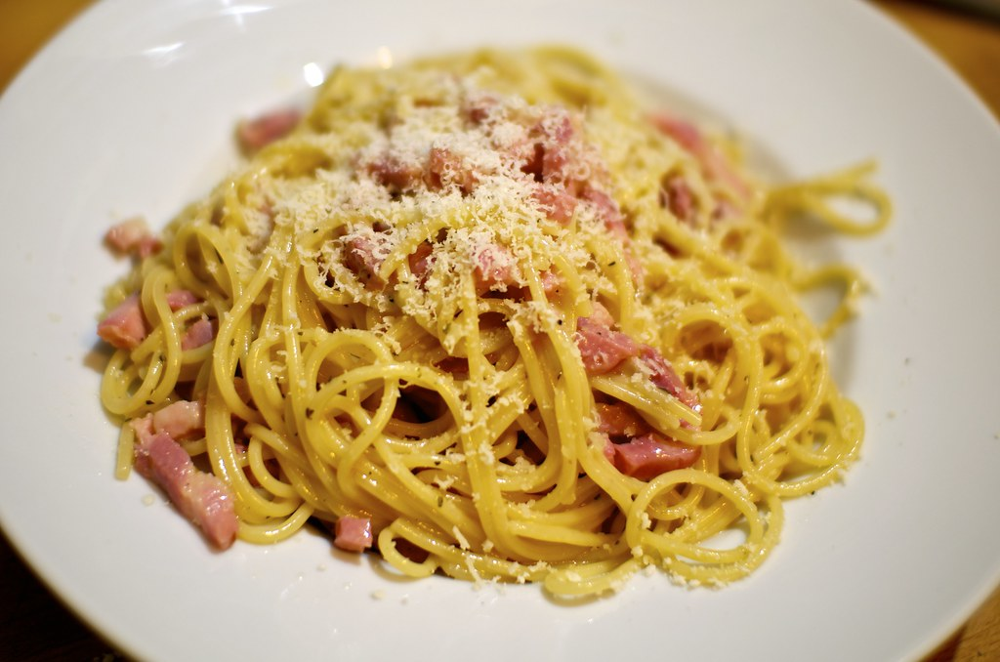

Spaghetti alla Carbonara
← Back to Home

Description
Spaghetti alla Carbonara is a traditional Italian pasta dish from Rome. With its creamy sauce, salty Pecorino Romano, and crispy pancetta, it’s a true classic of Italian cuisine.
Ingredients (for 2 servings)
- 200 g spaghetti
- 100 g pancetta (or bacon)
- 2 egg yolks
- 50 g Pecorino Romano (grated)
- 1 garlic clove (optional)
- Salt
- Black pepper
- Olivce oil
Steps
- Cook the spaghetti in a large pot of salted water until al dente.
- Dice the pancetta and fry it in a pan with a bit of olive oil until crispy. Optionally, add a crushed garlic clove for flavor, then remove it before proceeding.
- In a bowl, mix the egg yolks with the grated Pecorino and plenty of black pepper.
- Drain the spaghetti (reserve some pasta water) and quickly toss it with the pancetta in the pan.
- Remove the pan from heat and stir in the egg-cheese mixture. Add a little pasta water if needed to create a creamy sauce.
- Serve immediately with extra Pecorino and black pepper on top.
Closing
Buon appetito!